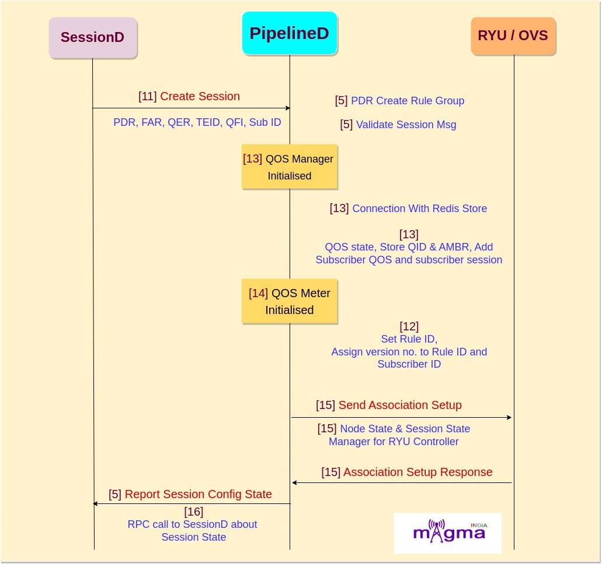

Magma PipelineD Service [0]¶
sessionD, OVS, directoryD, mobilityD.Interface of PipelineD with Other Services:¶
sessionD ←→pipelineD¶
L2-L4 and DPid for L4-L7 policies.OVS←→pipelineD¶
directoryD ←→pipelineD¶
mobilityD ←→pipelineD¶
Architecture of PipelineD¶
PipelineD is created by combining different components. Some of the main components are:
Session State Manager [5]: This controller manages session state information and reports session configuration to SMF.
Node State Manager [6]: Manages node state informationand reports to SMF.
QOS Manager [7]: Add, update and remove subscriber QOS and maintains QOS state as well as Subscriber Session state. Also manages QOS store(redis).
QOS Meter [8]: Utility class for managing IDs and meters qos information.
Rule Mapper [9]: This class assigns integers to rule ids so that they can be identified in an openflow register. The methods can be called from multiple threads.
Redis Store: Used for storing rule id, tunnel id and also acts as QOS store.
- Ryu Applications(Controllers) [10]: Pipelined services are implemented as Ryu applications (controllers) under the hood. Ryu apps are single-threaded entities that communicate using an event model. Generally, each controller is assigned a table and manages the its flows. Some of the controllers are:
Access Control Controller
ARP Controller
Quota Check Controller
Classifier
DPI Controller
Ingress/Egress Controller
Header Enrichment Controller
NG Service Controller
Uplink Bridge Controller
Call Flow¶
1. Session Establishment¶
[11] Create Session
[11] Create Add QER in PDR
[11] Create FAR in PDR
[11] According to PDR state, Create PDR
[11] Create Session Msg
[5] PDR create rule group
[5] Validate session msg
[5] Process session message
[13] Initialize QOS manager
[13] Setup connnection with redis store
[13] Initial qos state
[13] Store QID
[13] Store AMBR
[13] Get or create subscriber
[13] Add subscriber QOS
[13] Get or create subscriber session
[14] Initialise QOS meter
[14] Set ID manager
[12] Rule ID to number mapper
[12] Setup redis
[12] Register rule
[12] Create or get rule num
[12] Get rule id
[12] Assign version number to rule id and subscriber id combinations
[12] Subscriber + rule id to rule version
[15] initialize node state and session state manager with datapath connect event
[15] Send association setup
[15] Session message handler
[5] report session config state
[16] RPC call to sessionD about session state.
2. Session Modification¶

[5] Update PDR rules
[5] PDR create rule entry w.r.t PDR ID
[5] Process session message
[5] Find session with rule
[13] Update rule
[13] Update QOS data
[13] Update data in redis store
[13] Update rules map
[12] increment the version number for a given subscriber and rule
[12] Save version for the rule id
[12] Add to redis store
[15] Send association setup message
[5] report session config state
[16] RPC call to sessionD about session state
3. Session Termination¶

[11] Deactivate session
[11] Delete QER in PDR
[11] Deactivate flow
[13] remove subscriber QOS
[13] Removing QOS for rule num
[13] Remove QID
[13] Remove QOS data
[13] Remove rules
[13] Purge session with no rules
[13] Get all empty sessions
[13] Remove root AMBR QOS handle
[13] Purge Subscriber state with no rules
[14] Destroying all meters
[14] Remove QOS from QOS meter
[12] Remove all versions
[12] Remove element from redis store
[15] Delete all flows
[15] Cleanup state
[15] Stop NG services
[15] Cleanup on disconnect
[15] Send notification to sesisonD about release message
[5] report session config state
[16] RPC call to sessionD about session state